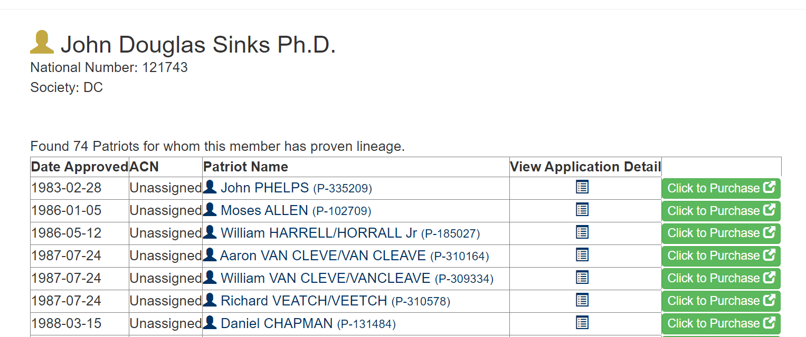

library(tidyverse) # who doesn't want to be tidy?
library(here) # relative file paths
library(rvest) # web scraping package
library(gt) # for nicer tablesAn Introduction to Web Scraping Using rvest
R
R-code
Data-Viz
tombstone
regex
web scraping
rvest
data cleaning
TidyTuesday
Web scraping data with rvest to enhance the information in the Tombstone Project.
Tombstone Project Overview
I’m working on a project for my father that will culminate in a website for his genealogy research. There are a couple of different parts that I’m working on independently. In a previous part of the project, I matched an Excel sheet with GPS coordinates and some biographic data with photos of various tombstones. I then used that data to make a leaflet map of various family grave sites.
I wanted to add more information beyond the information on the tombstone. My father suggested that I add information from applications he submitted for membership into the SAR. SAR, Sons of the American Revolution, is a society of men who can trace their lineage back to someone who served in the American Revolutionary War. Some of the application material is available on their website. He indicated that adding the links to his spreadsheet would be a lot of typing. I saw this material was openly available on the SAR website, so this would be an ideal task to solve with web scraping. (It turns out that there aren’t that many links after all, but it was helpful as a learning exercise.
This blog post deals with scraping the data from the website, wrangling it into a format where it could be matched against my father’s spreadsheet, and then looking for matches. (Every part of this series has ended up being more data wrangling and cleaning than I could have envisioned with just a touch of whatever neat thing I actually wanted to do.) I’ll also talk a bit about including some code from Google Bard.
The thumbnail for this post is the gravestone of Ebenezer Frost, one of the potential matches. You can see why birth and death dates are difficult to extract from the stone.
Loading Libraries and Data
This is my father’s spreadsheet after some clean-up. I go into the process in detail here.
data_file <-
readRDS(
here(
"posts",
"2023-08-04-data-cleaning-tombstone",
"tombstones_matched_final.RDS"
)
)Conceptual Overview of Web Scraping
Web scraping is extracting data from a website. If you vaguely know what web scraping is, you probably envision high-volume automated processes that extract large quantities of data. This type of web scraping has some ethical and legal concerns, which I’ll discuss in a later section. However, many of the tools and processes you need to understand to web scrape effectively can be practiced in a low-volume, non-automated way. This is the skill set I’m going to focus on in this tutorial.
- Acquire the webpage
- Identify the HTML elements you wish to extract
- Clean and wrangle the data into a format you can work with
- Automate by looping through web pages to acquire additional information
Ethics and Legality of Web Scraping
Do your research before you start a web scraping project, particularly if you intend to collect a high volume of data. If there is an alternate way to get the data, such as through an API, you should probably use that method over web scraping. Small-volume, publically accessible data scraped for non-commercial use is likely fine, both legally and ethically.
R for Data Science (2e) by Hadley Wickham, Mine Çetinkaya-Rundel, and Garrett Grolemund has a really nice overview of potential issues to consider before starting a web scraping project. Luke Barousse has a great YouTube video about a web scraping project he did that scraped data from LinkedIn that ended with his account access being restricted.
The data involved in this project involves information about people long dead, except for information I’ve shared about myself or my father, which I have permission to share. This is a very small project involving collecting data from a single webpage and is for non-commercial use.
Anatomy of a Webpage: Why do I need to know about CSS Selectors?
Modern webpages consist of HTML tags, which define the structure; CSS files, which define the style; and JavaScript files, which create interactivity. HTML tags are usually a pair of tags that enclose content and attributes. The html element is the tag, content, and attributes. The opening tag looks like <tag> while the closing tag looks like </tag>. In between the tags, you can have content, attributes, and other tags. HTML is hierarchical, and the relationship between tags is described using the language of families. The tag within a tag would be a child. The higher level tag would be a parent. Sibling tags are children of the same parent tag. All of this is important because to select the information you want, you will often need to describe the hierarchy to get to the correct content.
The formatting and styling of a webpage are generated with cascading styling sheets (CSS). These files describe how specific elements of the HTML should look. For example, you might want to make the h1 header quite large. You would do that in the CSS file with code like this:
h1 { font-size 72px; }
The CSS file selects the HTML elements using something called CSS selectors. The format of CSS selectors allows you to create complicated selectors- for example, to select the first entry of a list or all children of a table. Many web scraping tools use CSS selectors to extract the desired elements from the webpage. I initially found this confusing since I was trying to extract HTML tags, and it wasn’t made clear that this was using CSS selectors. It made googling for more information difficult as well since I wasn’t using the correct terminology. So, even though you may not be doing any web design, you should be familiar with CSS selectors if you intend to web scrape.
There is a cheat sheet here that shows some of the more advanced selectors and a great resource showing all different types of CSS selectors here.
Web Scraping with rvest
I decided to use the rvest package for web scraping. I was introduced to it through TidyTuesday, specifically the London Marathon dataset, which was drawn from the London Marathon package. The author of the package, Nicola Rennie, has a tutorial on how she used web scraping to create the package.
rvest is a tidyverse package and is installed with the installation of tidyverse. However, it is not a core tidyverse package and does need to be loaded separately with a call to library().
For politeness’s sake, I am working on a downloaded copy of the webpage. The function read_html() can also take a URL to read directly from a website. You don’t want to repeatedly be pulling the same data from a website as you are getting your code to work. So you can either work with a downloaded copy or use read_html once and then perform all your manipulations on a copy so you don’t have to pull the data again if you mess up your cleaning/wrangling.
There is a simple example on the webscraping using rvest. This vignette illustrates basic HMTL and CSS selectors to extract them. The rvest webpage recommends using the SelectorGadget to identify the elements you want to extract. There are also instructions at the SelectorGadget homepage. I didn’t use SelectorGadget when writing my code, but I did go back and try it when I was writing the tutorial, and I didn’t have much luck. I think you still need to know a decent amount about HTML in order to be able to get useful answers from it. In my case, I don’t think there is a selector to extract only the information I wanted. I think you have to select lots of information and do additional extracting in the code.
Reading in the Web Page
sar <-
read_html("Display Member - 121743 - John Douglas Sinks Ph.D..html")What I have now in sar is an XML document object. This seems like a simple list, but it is actually a very complicated object consisting of multiple nested lists.
Deciding which HTML elements to Extract
The next part is the part that I haven’t found a great tutorial on that I can refer you to. Nor do I have a great idea of how to teach this- other than trial and error. This has been the main block to publishing this section of the project. So, I will walk through what I did as an example.
Okay, so how did I actually find the proper CSS selector to extract the HTML elements I wanted, given that GadgetSelector didn’t work well?
I viewed the source code for the webpage (usually by right-clicking in the browser and clicking view source) and just looked for the elements I wanted.
Most tutorials on CSS selectors illustrate them with very simple HTML pages; the rvest vignette is a perfect case in point. However, when you actually go to scrape a page, there is a huge jump in (apparent) complexity.
A Real Webpage- Rendered and Source
This is what the webpage I want to scrape from looks like. It doesn’t look particularly complicated. There are 74 rows in the table.
Then you view the source code:
There are 2260 lines of code involved in making that webpage!
So, I searched (Ctrl-f in Chrome) in the source code page for the first name in the table, PHELPS. It shows up at line 451. This is the entire line:
<td><a href=“https://sarpatriots.sar.org/patriot/display/335209”><span style=“display:inline;color: #003366”> <span style=“color:#003366” class=“glyphicon glyphicon-user”></span> John PHELPS <small> (P-335209)</small></span></a> </td>
I see that it is wrapped in td tags. This means this item is being coded as a table cell element. That’s good news- if all the data is actually encoded as a table, then it is much easier to extract. I can look up how a table should be formatted in HTML. I found a great resource at the W3Schools: here is their page on tables.
A table should be tagged as a table with <table> and the closing tag </table>.
Each row should be tagged with <tr> and each cell with <td>
<table>
<tr>
<td>Cell A</td>
<td>Cell B</td>
</tr>
</table>
Knowing this, I can now search the source code for table. Why do I need to do this? If there are multiple tables on the page, I want to make sure I extract the correct one. Luckily for me, there is only one table.
If you only cared about the text in a table, you could easily extract it with html_table(). I want the text and the links, so I need to identify selectors to get to the hyperlinks.
I also know that there are a lot of hyperlinks on this page, so my selector might involve children of the table, or it might involve something related to the cell itself (td). I can’t just choose every hyperlink, or I’d have a pile of trash to sort through.
This is how you’d pull out all the hyperlinks.
all_hyperlinks <- sar %>%
html_nodes(css = "a")
head(all_hyperlinks){xml_nodeset (6)}
[1] <a class="navbar-brand" style="padding:10px 15px" href="https://sarpatrio ...
[2] <a href="https://sarpatriots.sar.org/patriot/search/" data-toggle="toolti ...
[3] <a href="https://sarpatriots.sar.org/member/search/" data-toggle="tooltip ...
[4] <a href="https://sarpatriots.sar.org/application/SearchDescendants/" data ...
[5] <a href="https://sarpatriots.sar.org/Biographies/search/" data-toggle="to ...
[6] <a href="https://sarpatriots.sar.org/cemetery/search/" data-toggle="toolt ...The first few are related to the navigation information at the top of the page. So, I do want a more sophisticated selector.
I need to understand how the table and rows are structured so I can construct the best selector. A row contains 5 cells. The first row is a header row.

The <th> tag is a child element of <tr> and represents table header elements. It should be used instead of <td> for the header elements. Again, looking at the source code and searching for that tag, I can verify that is true. The header row could just be coded as regular table cells, in which case I would need to discard that information during the data cleaning. Again, I’m lucky, and the header is properly encoded with `th’ tags.
My goal is to extract the patriot name and the link associated with it. There are actually 3 columns with links:
Patriot Name, which goes to another page with biographical information
View Application Detail, which goes to a page with an abbreviated genealogy.
Click to Purchase, which goes to a page allowing you to order the full application if you are a member
For my purpose, the link under Patriot Name has the most interesting information and is the one I want. But I’m going to end up with all the links, so I could use any of them.
Since I know I want a hyperlink, I need to understand how that type of element is encoded. Again, the W3Schools has a great explanation for hyperlinks.
A hyperlink uses the a' tag. Thea’ tag has two parts: the hyperlink, which is the attribute (comes after href = ), and the text. The plain text part follows the URL and may also include styling. If we go back to the cell I initially extracted for PHELPS, the href = URL is clear. Then there are some codes for styling, and then the text John PHELPS, more styling, and then a number. The name and the number (P-335209) are both in the text of this element.
<td><a href=“https://sarpatriots.sar.org/patriot/display/335209”><span style=“display:inline;color: #003366”> <span style=“color:#003366” class=“glyphicon glyphicon-user”></span> John PHELPS <small> (P-335209)</small></span></a> </td>
Note that when I played with the SelectorGadget, I could never get it to give me the selector for the hyperlinks. I could get the cell element <td>, or I could get <span>, which you can see is a child of the hyperlink. Even if you could get the hyperlink, I don’t know that it is possible to get just the column of hyperlinks that you wanted. I certainly couldn’t make it give me just the <span> of the column I wanted. If you think SelectorGadget will get you to exactly and only the content you want, then you might be frustrated.
Extracting the Links with html_nodes
To get the links that I wanted, I found an example on Stack Overflow. (As a side note, I just learned that you could annotate code in Quarto. If you like the annotations better than free-form explanations of the code, please let me know in a comment.)
I’ve been talking about CSS selectors, but you can also extract elements using a notation called XPATH. That is what the Stack Overflow solution uses. I believe you can build much more complicated selectors using XPATH, but for something basic, it is probably overkill. Here is an overview/cheat sheet. Datacamp also has a course on web scraping in R where they go through selecting with CSS selectors and XPath, but I honestly found it very confusing. I took the course twice (and did the coding for this project in between) and still couldn’t solve many of the problems.
Anyway, here we go:
1link_nodes <- sar %>% html_nodes(xpath = "//table//a")
2#link_nodes <- sar %>% html_nodes("table a")
3link_text <- link_nodes %>% html_text()
4text_df = as.data.frame(link_text)
index <- 1
for (index in seq(1:nrow(text_df))) {
text_df$url[index] <- link_nodes[index] %>% html_attr("href")
5}- 1
-
Select the elements we want out of the HTML using
rvest::html_nodes(). The XPath code specifies that I want `a’ tags that are children of the table. Store it in link_nodes. - 2
-
An alternate method is to use the more standard CSS selectors, but again, we want the
<a>elements that are children of the table. It is commented out here, but it produces identical results as 1. - 3
-
The link_node contains both the URL and the text. Here, I extract the text. There are two methods in the rvest package:
html_text()is faster but might include formatting information relating to whitespace.html_text2()is slower but produces cleaner output. - 4
- Now, I store the text in a dataframe.
- 5
-
Now, I loop through the text dataframe and add on the matching URL that we extract from link_nodes using
html_attr("href"). I had mentioned that the elements could contain attributes- attributes are additional features of the element and are expressed in the code asattribute = value. In this case, the format is something likehref= "https://sarpatriots.sar.org/patriot/display/335209"
So now I have a dataframe with the text and the URL stored separately.
head(text_df) link_text
1 John PHELPS (P-335209)
2
3 Click to Purchase\n\t\t\t\t\t\t\t\t\t\t\n\t\t\t\t\t\t\t\t\t
4 Moses ALLEN (P-102709)
5
6 Click to Purchase\n\t\t\t\t\t\t\t\t\t\t\n\t\t\t\t\t\t\t\t\t
url
1 https://sarpatriots.sar.org/patriot/display/335209
2 https://sarpatriots.sar.org/application/display/246742
3 https://sarpatriots.sar.org/application/purchase/246742
4 https://sarpatriots.sar.org/patriot/display/102709
5 https://sarpatriots.sar.org/application/display/246757
6 https://sarpatriots.sar.org/application/purchase/246757There is a bunch of whitespace (\n, \t) information in some of the entries (new line and tab markers). This perhaps would have been handled with html_text2. We’ve also lost some of the structure that the table had. Each hyperlink is extracted into its own row in the text_df, but 3 of these text_df rows correspond to one row in our webpage table. As I mentioned, I want the link associated with the Patriot name, so I can just take every third row of this text_df table and discard the rest. If I wanted a different link associated with the name, I could do that too.
Now, I’m creating an index to subset my rows. (This doesn’t need to be a separate variable. I’m just doing that for clarity.
subset_index <- seq(1, nrow(text_df), 3)
head(subset_index)[1] 1 4 7 10 13 16Then, I am subsetting the dataframe using subset_index for the rows and taking all columns.
raw_data <- text_df[subset_index,]
head(raw_data) link_text
1 John PHELPS (P-335209)
4 Moses ALLEN (P-102709)
7 William HARRELL/HORRALL Jr (P-185027)
10 Aaron VAN CLEVE/VAN CLEAVE (P-310164)
13 William VAN CLEVE/VANCLEAVE (P-309334)
16 Richard VEATCH/VEETCH (P-310578)
url
1 https://sarpatriots.sar.org/patriot/display/335209
4 https://sarpatriots.sar.org/patriot/display/102709
7 https://sarpatriots.sar.org/patriot/display/185027
10 https://sarpatriots.sar.org/patriot/display/310164
13 https://sarpatriots.sar.org/patriot/display/309334
16 https://sarpatriots.sar.org/patriot/display/310578Extracting the Links with html_elements
The html_nodes() function used above has been superseded by html_elements(). They should function exactly the same since the notes say that the function is merely renamed. It is generally best to use the most current version of the functions, so here is the above code updated. I’ve also switched to the CSS Selector instead of the XPATH, just to illustrate it produces the same results.
link_nodes2 <- sar %>%
html_elements("table a")
link_text2 <- link_nodes2 %>%
html_text2()
text_df2 = as.data.frame(link_text2)
index <- 1
for (index in seq(1:nrow(text_df2))) {
text_df2$url[index] <- link_nodes2[index] %>%
html_attr("href")
}
raw_data2 <- text_df2[subset_index, ]
head(raw_data2) link_text2
1 John PHELPS (P-335209)
4 Moses ALLEN (P-102709)
7 William HARRELL/HORRALL Jr (P-185027)
10 Aaron VAN CLEVE/VAN CLEAVE (P-310164)
13 William VAN CLEVE/VANCLEAVE (P-309334)
16 Richard VEATCH/VEETCH (P-310578)
url
1 https://sarpatriots.sar.org/patriot/display/335209
4 https://sarpatriots.sar.org/patriot/display/102709
7 https://sarpatriots.sar.org/patriot/display/185027
10 https://sarpatriots.sar.org/patriot/display/310164
13 https://sarpatriots.sar.org/patriot/display/309334
16 https://sarpatriots.sar.org/patriot/display/310578You can see it produces the same results. I did use html_text2(), which did handle the whitespace issues.
More than One Selector Works
Many times, there are several different selectors that work. The URLs I want are also children of the table cell elements (<td>), so you could use that instead of children of the table. If you were scraping over multiple pages, you might want to check and see if one selector was more universal than others. Here, I think “table a” is the better choice because it gives an idea of what is going on even if you don’t know HTML or CSS selectors. “td” just isn’t as obvious.
link_nodes3 <- sar %>%
html_elements("td a")
link_text3 <- link_nodes3 %>%
html_text2()
text_df3 = as.data.frame(link_text3)
index <- 1
for (index in seq(1:nrow(text_df3))) {
text_df2$url[index] <- link_nodes3[index] %>%
html_attr("href")
}
raw_data3 <- text_df2[subset_index,]
head(raw_data3) link_text2
1 John PHELPS (P-335209)
4 Moses ALLEN (P-102709)
7 William HARRELL/HORRALL Jr (P-185027)
10 Aaron VAN CLEVE/VAN CLEAVE (P-310164)
13 William VAN CLEVE/VANCLEAVE (P-309334)
16 Richard VEATCH/VEETCH (P-310578)
url
1 https://sarpatriots.sar.org/patriot/display/335209
4 https://sarpatriots.sar.org/patriot/display/102709
7 https://sarpatriots.sar.org/patriot/display/185027
10 https://sarpatriots.sar.org/patriot/display/310164
13 https://sarpatriots.sar.org/patriot/display/309334
16 https://sarpatriots.sar.org/patriot/display/310578Web Scraping Larger Volumes of Data
This is everything I need, but if I were working on a problem where I needed to scrape multiple pages, this is what I’d do. The actual URL of the webpage is https://sarpatriots.sar.org/member/display/121743. It saved the webpage with information about my father’s name, but that isn’t actually in the URL. So, I’d try a few URLs with different 6-digit numbers and see if they produced web pages with the same data. They do, with the exception that some pages say, “No known ancestors within this Online Database.”
I’d try to figure out what the range of valid numbers is. For example, 021743 isn’t valid and produces a page that says, “This is an invalid Member Number. Please check your records and try again.”
Then, I’d loop through all the valid member numbers and get the data. I’d have error handling for pages without a table. And I’d use a package like polite to make sure that the automated requests were being made using best practices.
Dataframes aren’t Tibbles!
Tibbles and data frames are usually entirely interchangeable, but sometimes you do run into the differences. The tidyverse doesn’t approve of row names or numbers, so they aren’t used. Dataframes do have row numbers, and you can see that R kept the indexing of the raw_data, so the row numbers are by 3s. However, indexing is, as usual, by position. So rev_war$name_unclean[3] returns the name associated with the row number 7. This is annoying and makes it difficult to pull out test cases. So, this should be fixed. This issue will pop up when you use data frames but not when you use tibbles.
So, two ways to fix this:
- Convert to a tibble using
as_tibble().
rev_war_tibble <- as_tibble(raw_data)
head(rev_war_tibble)# A tibble: 6 × 2
link_text url
<chr> <chr>
1 " John PHELPS (P-335209)" https://sarpatriots.sar.org/…
2 " Moses ALLEN (P-102709)" https://sarpatriots.sar.org/…
3 " William HARRELL/HORRALL Jr (P-185027)" https://sarpatriots.sar.org/…
4 " Aaron VAN CLEVE/VAN CLEAVE (P-310164)" https://sarpatriots.sar.org/…
5 " William VAN CLEVE/VANCLEAVE (P-309334)" https://sarpatriots.sar.org/…
6 " Richard VEATCH/VEETCH (P-310578)" https://sarpatriots.sar.org/…- Reassign the indexing of the data frame.
head(raw_data) link_text
1 John PHELPS (P-335209)
4 Moses ALLEN (P-102709)
7 William HARRELL/HORRALL Jr (P-185027)
10 Aaron VAN CLEVE/VAN CLEAVE (P-310164)
13 William VAN CLEVE/VANCLEAVE (P-309334)
16 Richard VEATCH/VEETCH (P-310578)
url
1 https://sarpatriots.sar.org/patriot/display/335209
4 https://sarpatriots.sar.org/patriot/display/102709
7 https://sarpatriots.sar.org/patriot/display/185027
10 https://sarpatriots.sar.org/patriot/display/310164
13 https://sarpatriots.sar.org/patriot/display/309334
16 https://sarpatriots.sar.org/patriot/display/310578rownames(raw_data) = seq(length = nrow(raw_data))
head(raw_data) link_text
1 John PHELPS (P-335209)
2 Moses ALLEN (P-102709)
3 William HARRELL/HORRALL Jr (P-185027)
4 Aaron VAN CLEVE/VAN CLEAVE (P-310164)
5 William VAN CLEVE/VANCLEAVE (P-309334)
6 Richard VEATCH/VEETCH (P-310578)
url
1 https://sarpatriots.sar.org/patriot/display/335209
2 https://sarpatriots.sar.org/patriot/display/102709
3 https://sarpatriots.sar.org/patriot/display/185027
4 https://sarpatriots.sar.org/patriot/display/310164
5 https://sarpatriots.sar.org/patriot/display/309334
6 https://sarpatriots.sar.org/patriot/display/310578I’m going to continue with the reindexed data frame.
Cleaning and Reformating the Data
Now, to wrangle the text data into a usable form. I did more extensive data cleaning in the first part of the project, which you can find here.
The link_text contains the name and an ID number, like John PHELPS (P-335209). This can be split into two components using ( as a separator. Remember that special characters like ( need to be escaped. So the actual separator is " \\(". I took the space also. Then I removed the other parenthesis with str_replace(). I used transmute to do the final mutation and select the columns I wanted moving forward.
# first, clean up the names
rev_war <- raw_data %>%
separate(link_text, sep = " \\(", into = c("name_unclean", "id_unclean") )
# Clean up the ID number
rev_war <- rev_war %>%
transmute(name_unclean, url, SAR_ID = str_replace(id_unclean, "\\)", ""))The names are a mess. Women have “Mrs” prepended. The last names are in all caps and sometimes have multiple variations separated by a /. There are also Jr and Sr at the end of some. There are different numbers of leading and trailing spaces on the names.
The whitespace, Jr/Sr, and Mrs issues are easy to deal with using tools from the stringr package. The “Mrs” is not useful at all, so I’m just going to replace it with” “via str_replace(). I’m going to remove the whitespace using str_trim(). I generally like to keep the original data so I can check the transformations, so these operations are in a new column name. I also made a suffix column for Jr/Sr and removed that info from the name column. I’m not changing the names to title case now because I’m going to use the fact that the last names are in upper case as part of my pattern matching later.
#remove Mrs
rev_war <- rev_war %>%
mutate(name =
str_replace(name_unclean, "Mrs", "")
) %>%
# There appear to be leading and tailing strings on the name
mutate(name =
str_trim(name, side = c("both"))
) %>%
# Deal with Jr/Sr first
mutate(suffix =
case_when(
str_detect(name, "Jr") == TRUE ~ "Jr",
str_detect(name, "Sr") == TRUE ~ "Sr",
TRUE ~""
)
) %>%
# Now remove the Jr and Sr from the name
mutate(name =
str_replace(name, "Jr", "")
) %>%
mutate(name =
str_replace(name, "Sr", "")
) %>%
#double check the white space issue
mutate(name =
str_trim(name, side = c("both"))
)That is all pretty straightforward.
Now, how do we break this up?
rev_war$name[3][1] "William HARRELL/HORRALL"The obvious choice would be to use the space(s) between the name to separate the string into two parts. This fails because of names like this:
rev_war$name[27][1] "Friderick William NAGEL/NAGLE"I admit I used trial and error to figure this out. First note- using str_split() from stringr is not the way to go. I got hyper-focused on stringr functions since I was using the package so heavily. It creates a matrix of results in your data frame and not new columns of data. Use something from the separate() family from tidyr instead.
I decided to do this stepwise. So the remove = FALSE flag needs to be set in separate(), so I keep the original data. First, I got the first names by splitting on the pattern of space and then two or more capital letters. The two or more is necessary because of names like Friderick William. This gives the complete first name(s) and an incomplete last name because the separator is discarded. So you end up with AGEL/NAGLE, which I dumped in a column named trash. Here, I immediately deleted it, but it was handy for troubleshooting.
# Bard gave me a hint to get the regex!
rev_war <- rev_war %>%
separate(
name,
into = c("first_name", "trash"),
remove = FALSE,
sep = "\\s+[A-Z]{2,}"
)Warning: Expected 2 pieces. Additional pieces discarded in 3 rows [4, 5, 25].head(rev_war) name_unclean
1 John PHELPS
2 Moses ALLEN
3 William HARRELL/HORRALL Jr
4 Aaron VAN CLEVE/VAN CLEAVE
5 William VAN CLEVE/VANCLEAVE
6 Richard VEATCH/VEETCH
url SAR_ID
1 https://sarpatriots.sar.org/patriot/display/335209 P-335209
2 https://sarpatriots.sar.org/patriot/display/102709 P-102709
3 https://sarpatriots.sar.org/patriot/display/185027 P-185027
4 https://sarpatriots.sar.org/patriot/display/310164 P-310164
5 https://sarpatriots.sar.org/patriot/display/309334 P-309334
6 https://sarpatriots.sar.org/patriot/display/310578 P-310578
name first_name trash suffix
1 John PHELPS John
2 Moses ALLEN Moses
3 William HARRELL/HORRALL William /HORRALL Jr
4 Aaron VAN CLEVE/VAN CLEAVE Aaron
5 William VAN CLEVE/VANCLEAVE William
6 Richard VEATCH/VEETCH Richard /VEETCH # Delete the trash columns
rev_war <- rev_war %>%
select(-trash)Getting the last name was trickier because any separator I could think of would also catch the multiple first-name people. Back to stringr to use str_extract(). Basically, any chunk of text with two or more capital letters in a row followed by any number of any other type of character is extracted.
rev_war <- rev_war %>%
mutate(Last_name = str_extract(name, "[A-Z]{2,}.+"))
head(rev_war) name_unclean
1 John PHELPS
2 Moses ALLEN
3 William HARRELL/HORRALL Jr
4 Aaron VAN CLEVE/VAN CLEAVE
5 William VAN CLEVE/VANCLEAVE
6 Richard VEATCH/VEETCH
url SAR_ID
1 https://sarpatriots.sar.org/patriot/display/335209 P-335209
2 https://sarpatriots.sar.org/patriot/display/102709 P-102709
3 https://sarpatriots.sar.org/patriot/display/185027 P-185027
4 https://sarpatriots.sar.org/patriot/display/310164 P-310164
5 https://sarpatriots.sar.org/patriot/display/309334 P-309334
6 https://sarpatriots.sar.org/patriot/display/310578 P-310578
name first_name suffix Last_name
1 John PHELPS John PHELPS
2 Moses ALLEN Moses ALLEN
3 William HARRELL/HORRALL William Jr HARRELL/HORRALL
4 Aaron VAN CLEVE/VAN CLEAVE Aaron VAN CLEVE/VAN CLEAVE
5 William VAN CLEVE/VANCLEAVE William VAN CLEVE/VANCLEAVE
6 Richard VEATCH/VEETCH Richard VEATCH/VEETCHNow to split on /. In this dataset, we can have 1-3 possible last names. The separate function requires that you know how many parts you are splitting the string into. If you tell the separate() function that you have 3 parts, it will create a warning for any strings that don’t have 3 parts. It will execute though, and it will fill in the missing parts with NAs and discard the extra parts. This actually happened when I separated out the first name above, but the discarded parts were all from the last name part, which I was trashing anyway.
Separate has been superseded by other separate functions, so I’m going to demonstrate the use of the preferred function, separate_wider_delim() . separate_wider_delim(), unlike separate(), will kick up an error if you don’t have the right number of parts and fail to execute. However, you can run it in debug mode, and it will perform the splits and then tell you on a row-by-row basis if there were the right number of parts. I exploited this and then threw away the debugging info, removed the NAs, and changed the last names to title case. (Note that the first name column should be handled the same way since there is one name that is listed with two variations: Johannes/John .)
#Now we need to split the names with /
rev_war_test <- rev_war %>%
separate_wider_delim(
Last_name,
names = c("V1",
"V2",
"V3"),
delim = "/",
too_few = c("debug"),
too_many = c("debug"),
cols_remove = FALSE
)Warning: Debug mode activated: adding variables `Last_name_ok`, `Last_name_pieces`, and
`Last_name_remainder`.rev_war_test <- rev_war_test %>%
select(name_unclean, first_name, V1, V2, V3, suffix, url, SAR_ID)
rev_war_test <- rev_war_test %>%
mutate(V2 = ifelse(is.na(V2), "", V2),
V3 = ifelse(is.na(V3), "", V3),
V1 = str_to_title(V1),
V2 = str_to_title(V2),
V3 = str_to_title(V3)
)
rev_war_test# A tibble: 74 × 8
name_unclean first_name V1 V2 V3 suffix url SAR_ID
<chr> <chr> <chr> <chr> <chr> <chr> <chr> <chr>
1 " John PHELPS " John Phel… "" "" "" http… P-335…
2 " Moses ALLEN " Moses Allen "" "" "" http… P-102…
3 " William HARRELL/HORRA… William Harr… "Hor… "" "Jr" http… P-185…
4 " Aaron VAN CLEVE/VAN … Aaron Van … "Van… "" "" http… P-310…
5 " William VAN CLEVE/VA… William Van … "Van… "" "" http… P-309…
6 " Richard VEATCH/VEETC… Richard Veat… "Vee… "" "" http… P-310…
7 " Daniel CHAPMAN " Daniel Chap… "" "" "" http… P-131…
8 " William HORRALL Sr " William Horr… "" "" "Sr" http… P-335…
9 " William BALDWIN " William Bald… "" "" "" http… P-107…
10 " John GOODALL/GOODALE … John Good… "Goo… "" "" http… P-167…
# ℹ 64 more rowsMatching to Excel
So the ultimate goal is to match the URLs with names from my father’s spreadsheet to save him some typing [6,000 words later, I might be getting close to saving him a few keystrokes. :) ]
I’m not going to go into too much detail here since the main point of this tutorial was web scraping and data cleaning.
So, I have up to three variations on the name based on the last names. My plan was to match on the first variation, then for those that failed to match, match on the second variation, and so on.
I was mildly hopeful that the first variation was the variation that my father used in his Excel table. So, I did a quick check using an inner join. My father had mentioned that there wouldn’t be many matches- maybe 5 or 6, because he hadn’t found most of the graves yet.
rev_war_test <- rev_war_test %>%
mutate(match_1 = paste0(V1, " ", first_name))
matched_records <- rev_war_test %>%
inner_join(data_file, by = c("match_1" = "full_name")) %>%
select(match_1,
Surname,
First.Name,
Middle.Name,
DOB_date,
DOD_date)
matched_records %>% gt()| match_1 | Surname | First.Name | Middle.Name | DOB_date | DOD_date |
|---|---|---|---|---|---|
| Chapman Daniel | Chapman | Daniel | NA | NA | NA |
| Chapman Daniel | Chapman | Daniel | NA | 1863-07-05 | NA |
| Horrall William | Horrall | William | NA | NA | NA |
| Baldwin William | Baldwin | William | NA | NA | NA |
| Frost Ebenezer | Frost | Ebenezer | NA | NA | NA |
| Mory Gotthard | Mory | Gotthard | NA | 1752-03-20 | 1843-05-26 |
| Horlacher Daniel | Horlacher | Daniel | NA | 1735-08-04 | 1804-09-24 |
| Rockel Balzer | Rockel | Balzer | NA | 1707-11-10 | 1800-06-09 |
| Finch Isaac | Finch | Isaac | NA | NA | 1813-11-26 |
| Woolard John | Woolard | John | Edward | 1872-01-21 | 1936-10-19 |
| Meredith Samuel | Meredith | Samuel | NA | NA | 1825-10-10 |
| Meredith Samuel | Meredith | Samuel | NA | NA | 1884-01-05 |
| Anderson Abraham | Anderson | Abraham | NA | 1776-03-10 | 1838-08-15 |
| Dorris William | Dorris | William | Scott | NA | NA |
| Dorris William | Dorris | William | T | NA | NA |
| Dorris William | Dorris | William | H | NA | 1857-08-10 |
| Dorris William | Dorris | William | NA | 1818-11-28 | 1905-02-17 |
What we see is that many names are reused in the family, an issue I dealt with extensively while cleaning up my father’s spreadsheet. Some, but not all, of the people in my father’s spreadsheet have birthdate (DOB) or death date (DOD) information. This could be used to rule out potential matches (for example, if someone was born after the War or if they were only 3 years old during the Revolutionary War). Since there is so much missing data, using dates to rule people in would not work. So, if I select only people alive during the American Revolutionary War and then match, I am potentially excluding the correct person if their DOB or DOD is NA in the spreadsheet.
Coding with AI: A Useful Tool to Generate Regex?
Large Language Models (LLM) like ChatGPT and Google Bard are trendy right now. I’ve seen a lot of people say that these AI models can be used to increase productivity across a variety of domains. All sorts of tools and services now have AI bonus features. Datacamp has AI in their workspaces and also for some of the course coding exercises. I haven’t been too impressed. Generally, syntax errors are caught, corrected, and explained, but deeper problems aren’t. I also found that the results often hyperfocus on syntax that is technically correct but not necessarily best or common practice. For example, in a dpylr join, you don’t need to specify the columns to join on if they have the same name in both dataframes. However, the AI would insist that not specifying the columns in the code was the problem.
I’ve also played around with Google Bard for writing and summarizing writing, and the results ranged from generic to ridiculous.
Anyway, as I was staring at the stringr cheatsheet trying to figure out the regex for the pattern space and then a capital letter, I thought that this might be the perfect use case for Bard.
So:
hi I need the regular expression for one or more spaces followed by a capital letter
Sure, here is the regular expression for one or more spaces followed by a capital letter:
Code snippet
\s+[A-Z]
Use code with caution. Learn more
The \s metacharacter matches a single space character, and the + quantifier means that the space character can be matched one or more times. The [A-Z] character class matches any capital letter.
So, this regular expression will match any string that contains one or more spaces followed by a capital letter. For example, it would match the strings “ A”, ” B”, and “C”.
Here is an example of how to use this regular expression in Python:
Python
import re
string = “ A”
match = re.search(r”\s+[A-Z]“, string)
if match:
print(match.group())
Use code with caution. Learn more
This code will print the capital letter that is matched by the regular expression. In this case, the code will print the letter “A”.
I hope this helps! Let me know if you have any other questions.
I “read” regex much better than I can write it, so "\s+[A-Z]" was enough for me. It isn’t right, but it is almost right. The correct regex is "\\s+[A-Z]" .
Just for fun, I asked Bard for the R code. I was using voice to text so my question is a bit garbled. Comma should be , of course.
can you give me an example of how to use it in r comma for example in the tidyr function separate
Sure, here is an example of how to use the regular expression in R, using the separate function from the tidyr package:
R
library(tidyr)
data <- data.frame(
text = c(“ A”, ” B”, “C”),
stringsAsFactors = FALSE
)
data %>% separate(text, into = c(“prefix”, “letter”), sep = r”\s+[A-Z]“)
#> # A tibble: 3 x 2
#> prefix letter
#> <chr> <chr>
#> 1 <NA> A
#> 2 B B
#> 3 <NA> C
Use code with caution. Learn more
This code will first load the tidyr package. Then, it will create a data frame called data with three rows, each containing a string with one or more spaces followed by a capital letter. The separate function will then be used to split the strings in the text column into two columns: prefix and letter. The sep argument is used to specify the regular expression that will be used to split the strings. In this case, the regular expression is \s+[A-Z], which matches one or more spaces followed by a capital letter.
The output of the code is a data frame with three rows and two columns. The prefix column contains the string that precedes the capital letter, and the letter column contains the capital letter.
I hope this helps! Let me know if you have any other questions.
Does this run? No, of course not! First, this is a terrible example anyway because none of the strings can be split into two parts based on that regex. (‘A A A’ or ‘a B a’ or something like that would be a much better choice.) You certainly won’t get the output that Bard predicts. Remember, the separator gets discarded. For row one, the separator is “ A” and there is no part one and no part two. Same with row 2. C should be the prefix, and the letter should be NA. There is no separator in this case. Lots of warnings are going to be generated by this…
I’m not sure where the extra r in sep = r" \s+[A-Z]" came from. You can fix that and get it to run.
data <- data.frame(
text = c(" A", " B", "C"),
stringsAsFactors = FALSE
)
data %>% separate(text, into = c("prefix", "letter"), sep = "\\s+[A-Z]")Warning: Expected 2 pieces. Missing pieces filled with `NA` in 1 rows [3]. prefix letter
1
2
3 C <NA>But it doesn’t give the answer Bard claims.
I was feeling amused, so I argued back and forth with Bard about the need for the escape character. It finally conceded my point and gave me the following code:
data %>% separate(text, into = c("prefix", "letter"), sep = r"\\\\\s+[A-Z]", fixed = FALSE)
Again, this also doesn’t run, even with the r removed, because \\\\\s is not \\s. Adding extra random slashes does not improve your code!
In the end, it did save me a bit of time in generating the regex. I think it can be a useful tool, but it is probably more valuable if you have a good idea of what you are doing and can tell if the answer is correct or not. Or if you have the skills to debug what you are given. If you are a learner, I think it can potentially be very time-consuming and frustrating to use.
Citation
BibTeX citation:
@online{e. sinks2023,
author = {E. Sinks, Louise},
title = {An {Introduction} to {Web} {Scraping} {Using} Rvest},
date = {2023-09-08},
url = {https://lsinks.github.io/posts/2023-09-08-web-scraping-tombstones/web-scraping},
langid = {en}
}
For attribution, please cite this work as:
E. Sinks, Louise. 2023. “An Introduction to Web Scraping Using
Rvest.” September 8, 2023. https://lsinks.github.io/posts/2023-09-08-web-scraping-tombstones/web-scraping.